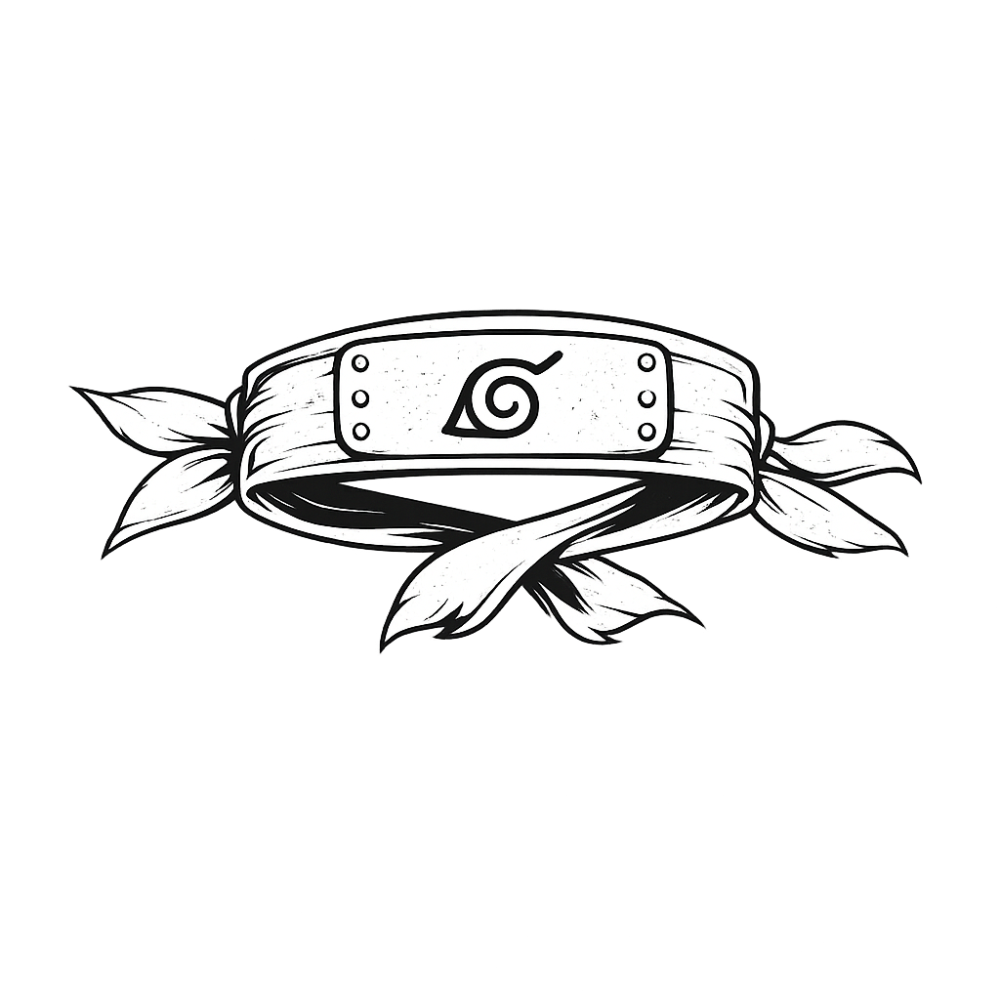
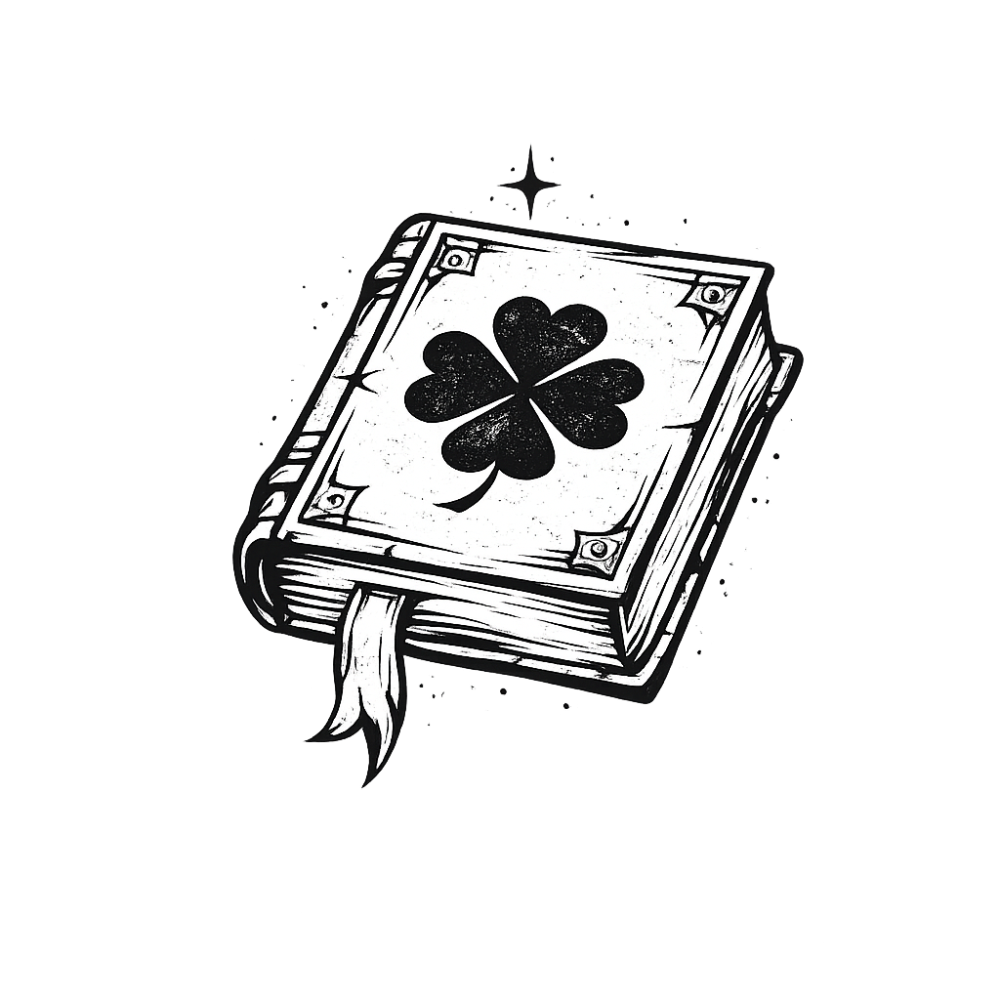

"Programar é a minha magia e desistir não é uma opção."
Explorando a tecnologia através da determinação de Black Clover, Haikyuu e Naruto.
Meus Valores
Resiliência

Melhor explorado em: NarutoAcredito que nenhum obstáculo é grande demais quando a determinação é maior. Assim como Naruto, que foi rejeitado por uma vila inteira e mesmo assim nunca abandonou seu sonho, eu encaro cada erro e cada bug como um degrau — não como um muro. Cair faz parte, levantar é o que me define.
Colaboração
 Melhor explorado em: Haikyuu!!
Melhor explorado em: Haikyuu!!
Acredito que os melhores resultados nascem da troca. Ninguém constrói algo grande sozinho — assim como Hinata precisou de Kageyama para voar, eu valorizo cada revisão de código, cada pair programming e cada feedback honesto. Crescer junto é mais poderoso do que crescer rápido.
Dedicação

Melhor explorado em: Black CloverAcredito que o esforço consistente supera o talento inato. Asta nasceu sem uma gota de magia num mundo onde magia é tudo — e mesmo assim chegou ao topo na força do trabalho e da vontade. Da mesma forma, compenso cada dificuldade com horas de estudo, prática e entrega total.
Explorando os Universos
Naruto Uzumaki
Imagine carregar o peso do ódio de uma vila inteira desde o nascimento — e mesmo assim acordar todo dia com um sorriso e um sonho maior do que qualquer dor. Naruto Uzumaki é a prova viva de que a narrativa que o mundo escreve sobre você não precisa ser a que você vive. Com a raposa de nove caudas selada dentro de si e zero reconhecimento, ele transforma cada rejeição em combustível, cada fracasso em degrau, e cada rival em um possível aliado. Mais do que se tornar Hokage, Naruto nos ensina que a maior vitória é mudar os corações daqueles que um dia te odiaram.
Explorar universo →
Hinata Shoyo
Num esporte onde centímetros decidem carreiras, Hinata Shoyo decidiu ignorar as regras do jogo — e reescrevê-las. Com apenas 1,64m e instintos que desafiam a lógica, ele entra em quadra como um raio: explosivo, imprevisível e impossível de ignorar. Sua jornada no Karasuno não é sobre ser o melhor — é sobre provar que a vontade de voar é mais poderosa do que a capacidade de alcançar. Cada salto de Hinata é um lembrete de que o talento pode ser treinado, mas a chama interior ou você tem, ou você aprende a acender.
Explorar universo →Asta
Em um mundo onde magia é sinônimo de poder, identidade e valor social, Asta nasceu como uma anomalia: sem uma gota de mana. Enquanto todos ao seu redor invocavam chamas, gelo e relâmpagos com um gesto, ele empunhava espadas absurdamente pesadas e gritava mais alto do que qualquer feitiço. Asta não escolheu o caminho mais fácil — ele simplesmente recusou o mais difícil como justificativa para parar. Seu grimório negro de cinco trevos não é apenas um símbolo de poder: é a resposta do universo para quem nunca desistiu mesmo quando todas as portas estavam fechadas.
Explorar universo →